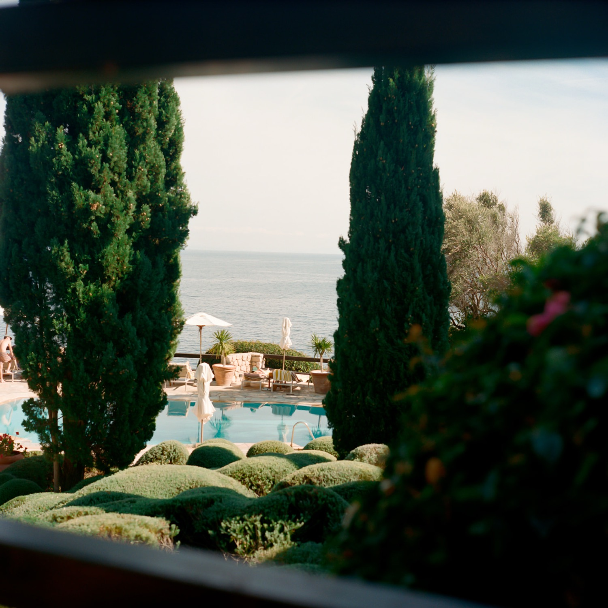
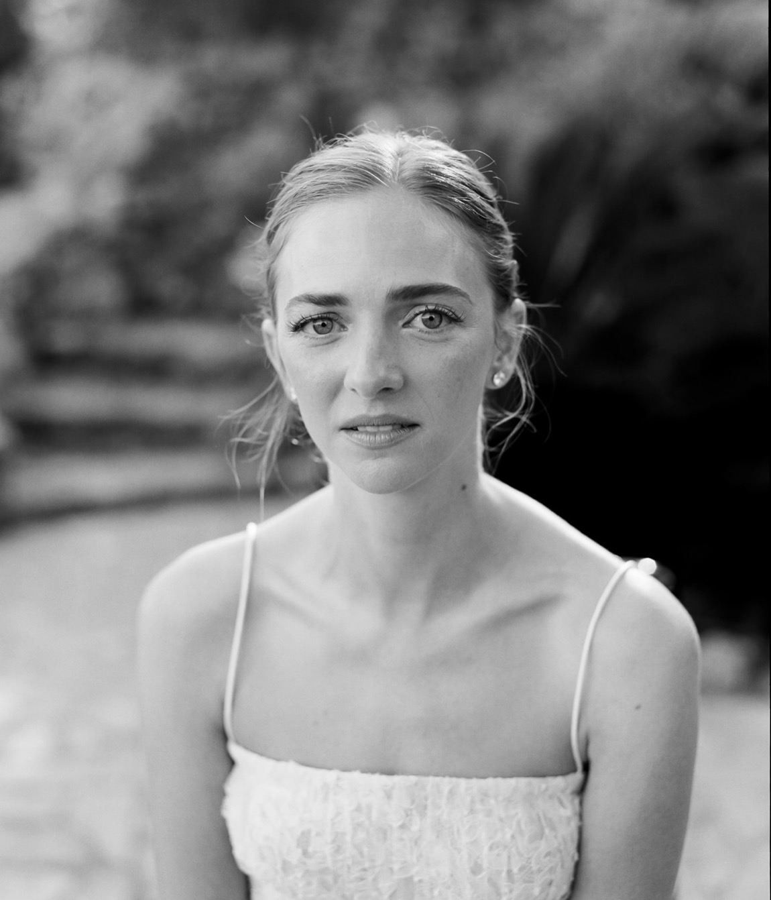
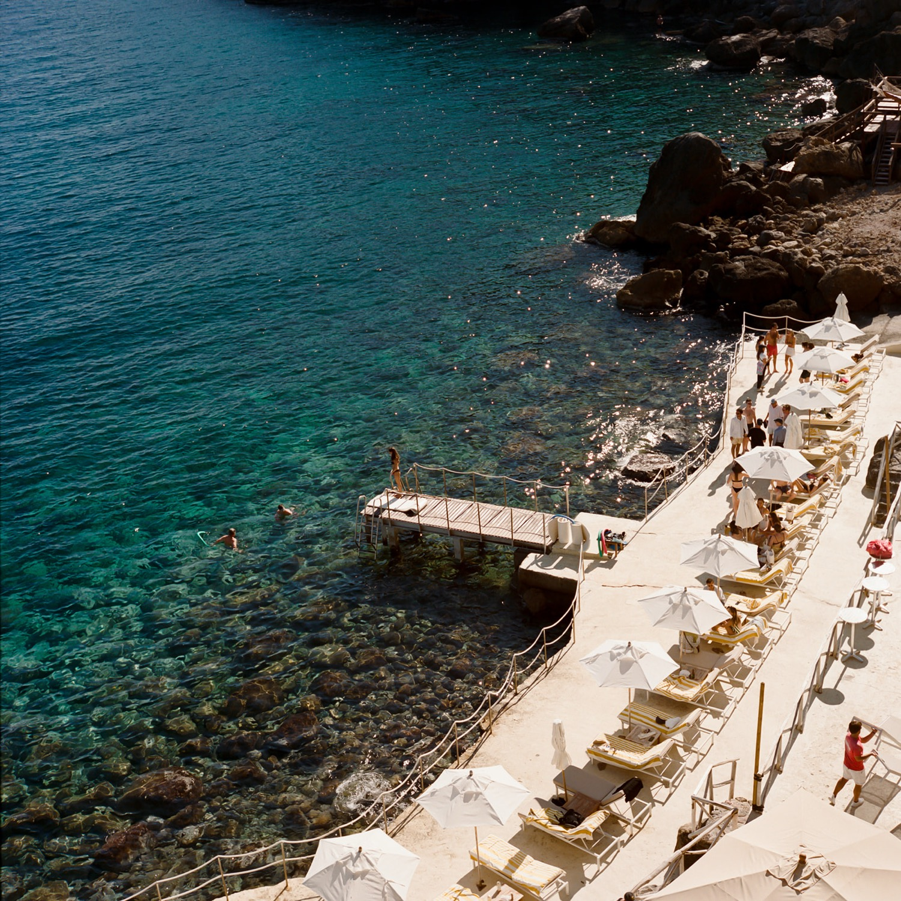
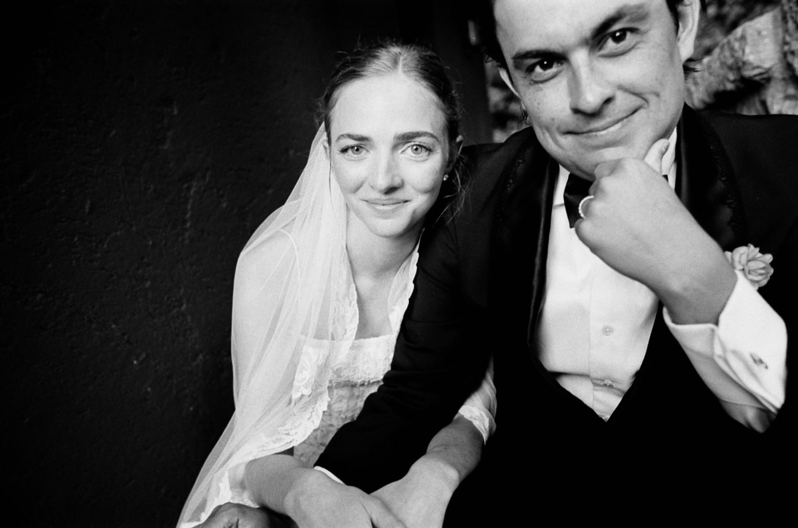

The Film
Some weddings you photograph. A few you sit inside, and let happen.
Sam and Olivia were married over two unhurried days in the Tuscan hills, all of it shot on 16mm — three rolls a day, never more. The format asks a certain patience of you: you stop chasing every moment and begin waiting for the right one.
There is something Kodak film does that nothing else will. It flatters no one and forgives everyone — the afternoon light came through the grain like honey and held its warmth into the last of the evening.

There are no second takes. The crank turns, the magazine empties, and whatever happened in those thirty seconds is the only version there will ever be. The film is as singular as the day it remembers.
Marcus Herne scored it afterward — a piece of music written for the two of them alone, tuned to who they are and the day they spent. We finished as it found the picture, the courtyard full, Sam and Olivia somewhere in the middle of it.



- Couple
- Sam & Olivia
- Location
- Tuscany, Italy
- Captured on
- Kodak 16mm film
- Original score
- Marcus Herne
- Direction, film & edit
- Sanvir Chana
- Stills
- Tejas